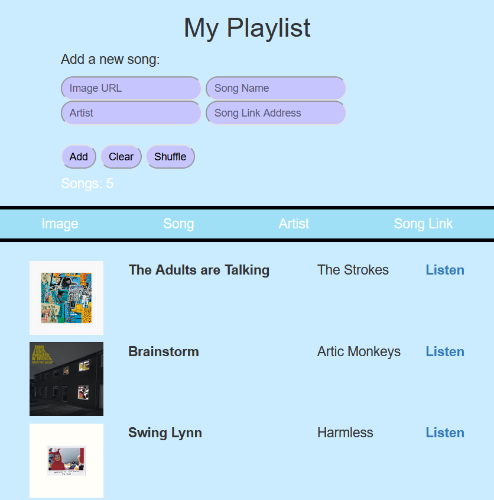
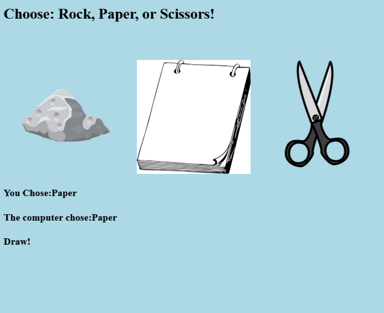
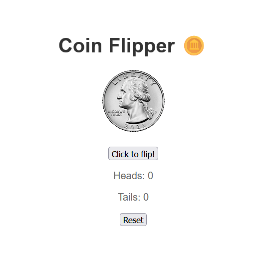

Personal Playlist

After mastering my HTML, CSS, and JavaScript skills, I was tasked with a 2 month long project where I created a functional playlist! The playlist has features such as adding music, shuffling songs, and connecting videos to the music you like! With over 170 lines of JavaScript code, this was one of the most complicated projects I've done.
Rock, Paper, Scissors!

After completing the playlist project early, I was tasked with yet another JavaScript heavy project: A rock paper and scissors game! This project involved quite a bit of math to achieve a balanced odd of randomness, but I had actually instead finished it way too early by two days. This project was a quick project I got done in 30 minutes.
Coin Flip with React!

As of making this website, I am still in my internship with Code Nation partnered with Google where I am learning React! Since I am still working on my big React project, here are one of the many mini projects we created using React. With React I am able to simplify UI elements of web pages and automate a lot of components. Here I created a coin flipper that gives Heads or Tails and can be re-used as many times as the developer needs.